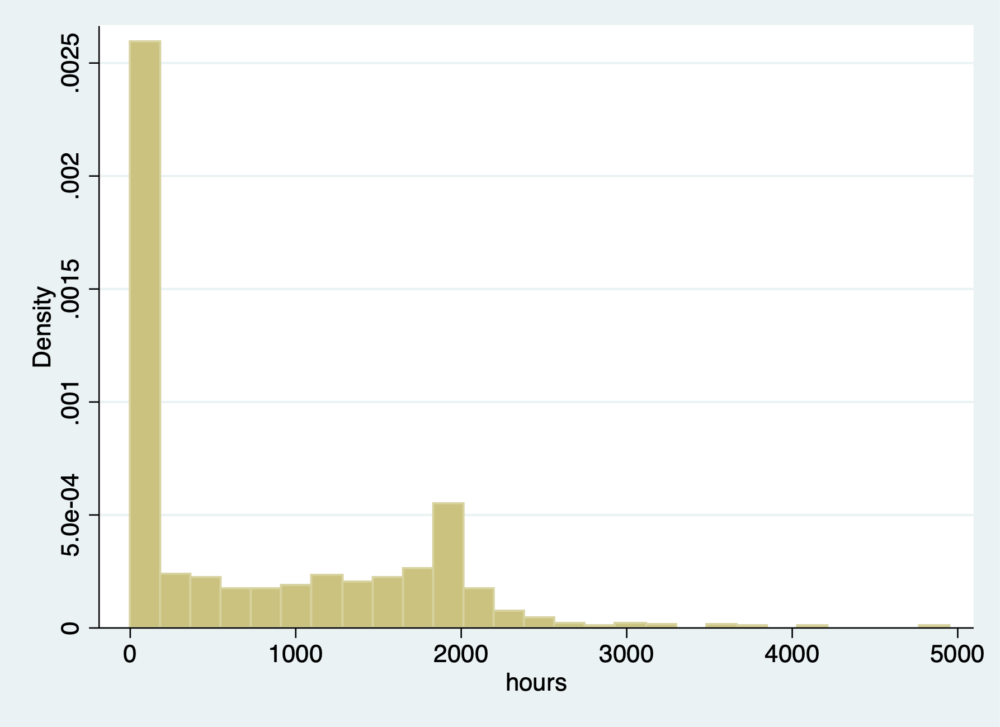

Chapter 1 Corner Solution - Tobit Model
Married Women’s Annual Labor Supply
Lesson: 1. Tobit and OLS have the same sign; 2. Tobit and OLS magnitudes are not directly comparable. We need an adjustment factor, or use marginal effects.
We’ll look at hours of labor being supplied. We have data on married women’ annual labor supply with hours of work for wage in the labor force. There are 428 women employed with hours, and 325 women have no hours. Since we have a sizable about of 0 (corner soluation), we can use a Tobit model.
Summarize hours
cd "/Users/Sam/Desktop/Econ 645/Data/Wooldridge"
use mroz.dta, clear
sum hours
tab inlf, sum(hours)
tab hours if hours == 0
tabstat hours, by(inlf) stat(mean median sd)/Users/Sam/Desktop/Econ 645/Data/Wooldridge
Variable | Obs Mean Std. Dev. Min Max
-------------+---------------------------------------------------------
hours | 753 740.5764 871.3142 0 4950
| Summary of hours
inlf | Mean Std. Dev. Freq.
------------+------------------------------------
0 | 0 0 325
1 | 1302.9299 776.27438 428
------------+------------------------------------
Total | 740.57636 871.31422 753
hours | Freq. Percent Cum.
------------+-----------------------------------
0 | 325 100.00 100.00
------------+-----------------------------------
Total | 325 100.00
Summary for variables: hours
by categories of: inlf
inlf | mean p50 sd
---------+------------------------------
0 | 0 0 0
1 | 1302.93 1365.5 776.2744
---------+------------------------------
Total | 740.5764 288 871.3142
----------------------------------------We have 325 women who had 0 hours.

We have corner solution for women have 0 hours of laborThe range for women who do have working hours - ranges from 12 to 4950 hours
Variable | Obs Mean Std. Dev. Min Max
-------------+---------------------------------------------------------
hours | 428 1302.93 776.2744 12 4950OLS Model
Source | SS df MS Number of obs = 753
-------------+---------------------------------- F(7, 745) = 38.50
Model | 151647606 7 21663943.7 Prob > F = 0.0000
Residual | 419262118 745 562767.944 R-squared = 0.2656
-------------+---------------------------------- Adj R-squared = 0.2587
Total | 570909724 752 759188.463 Root MSE = 750.18
------------------------------------------------------------------------------
hours | Coef. Std. Err. t P>|t| [95% Conf. Interval]
-------------+----------------------------------------------------------------
nwifeinc | -3.446636 2.544 -1.35 0.176 -8.440898 1.547626
educ | 28.76112 12.95459 2.22 0.027 3.329283 54.19297
exper | 65.67251 9.962983 6.59 0.000 46.11365 85.23138
expersq | -.7004939 .3245501 -2.16 0.031 -1.337635 -.0633524
age | -30.51163 4.363868 -6.99 0.000 -39.07858 -21.94469
kidslt6 | -442.0899 58.8466 -7.51 0.000 -557.6148 -326.565
kidsge6 | -32.77923 23.17622 -1.41 0.158 -78.2777 12.71924
_cons | 1330.482 270.7846 4.91 0.000 798.8906 1862.074
------------------------------------------------------------------------------
Predictive margins Number of obs = 753
Model VCE : OLS
Expression : Linear prediction, predict()
------------------------------------------------------------------------------
| Delta-method
| Margin Std. Err. t P>|t| [95% Conf. Interval]
-------------+----------------------------------------------------------------
_cons | 740.5764 27.33803 27.09 0.000 686.9076 794.2451
------------------------------------------------------------------------------Tobit Model
eststo TOBIT: tobit hours nwifeinc educ exper expersq age kidslt6 kidsge6, ll(0)
quietly sum exper
local exp2=r(mean)^2Tobit regression Number of obs = 753
LR chi2(7) = 271.59
Prob > chi2 = 0.0000
Log likelihood = -3819.0946 Pseudo R2 = 0.0343
------------------------------------------------------------------------------
hours | Coef. Std. Err. t P>|t| [95% Conf. Interval]
-------------+----------------------------------------------------------------
nwifeinc | -8.814243 4.459096 -1.98 0.048 -17.56811 -.0603724
educ | 80.64561 21.58322 3.74 0.000 38.27453 123.0167
exper | 131.5643 17.27938 7.61 0.000 97.64231 165.4863
expersq | -1.864158 .5376615 -3.47 0.001 -2.919667 -.8086479
age | -54.40501 7.418496 -7.33 0.000 -68.96862 -39.8414
kidslt6 | -894.0217 111.8779 -7.99 0.000 -1113.655 -674.3887
kidsge6 | -16.218 38.64136 -0.42 0.675 -92.07675 59.64075
_cons | 965.3053 446.4358 2.16 0.031 88.88528 1841.725
-------------+----------------------------------------------------------------
/sigma | 1122.022 41.57903 1040.396 1203.647
------------------------------------------------------------------------------
325 left-censored observations at hours <= 0
428 uncensored observations
0 right-censored observationsAverage Marginal Effects
Using ystar option with the margins command tells Stata to act like there is no censoring even though the model allows for it Statelist Discussion 1531196
quietly margins, dydx(*) predict(ystar(0,.)) at(expersq=`exp2')
eststo AME: margins, dydx(*) predict(ystar(0,.)) at(expersq=`exp2') postAverage marginal effects Number of obs = 753
Model VCE : OIM
Expression : E(hours*|hours>0), predict(ystar(0,.))
dy/dx w.r.t. : nwifeinc educ exper expersq age kidslt6 kidsge6
at : expersq = 113.0141
------------------------------------------------------------------------------
| Delta-method
| dy/dx Std. Err. z P>|z| [95% Conf. Interval]
-------------+----------------------------------------------------------------
nwifeinc | -5.223903 2.639553 -1.98 0.048 -10.39733 -.0504745
educ | 47.79592 12.7368 3.75 0.000 22.83224 72.7596
exper | 77.9737 9.900685 7.88 0.000 58.56872 97.37869
expersq | -1.104823 .316282 -3.49 0.000 -1.724724 -.4849218
age | -32.24401 4.348403 -7.42 0.000 -40.76672 -23.72129
kidslt6 | -529.8564 65.40462 -8.10 0.000 -658.0471 -401.6657
kidsge6 | -9.611857 22.90535 -0.42 0.675 -54.50553 35.28181
------------------------------------------------------------------------------Don’t forget to use the post option when using eststo
Marginal Effects at the Average
We will need to rerun the Tobit again to get our marginal effects at the average.
quietly tobit hours nwifeinc educ exper expersq age kidslt6 kidsge6, ll(0)
eststo MEA: margins, dydx(*) predict(ystar(0,.)) at(expersq=`exp2') atmeans postConditional marginal effects Number of obs = 753
Model VCE : OIM
Expression : E(hours*|hours>0), predict(ystar(0,.))
dy/dx w.r.t. : nwifeinc educ exper expersq age kidslt6 kidsge6
at : nwifeinc = 20.12896 (mean)
educ = 12.28685 (mean)
exper = 10.63081 (mean)
expersq = 113.0141
age = 42.53785 (mean)
kidslt6 = .2377158 (mean)
kidsge6 = 1.353254 (mean)
------------------------------------------------------------------------------
| Delta-method
| dy/dx Std. Err. z P>|z| [95% Conf. Interval]
-------------+----------------------------------------------------------------
nwifeinc | -5.687381 2.877882 -1.98 0.048 -11.32793 -.0468358
educ | 52.03649 13.82013 3.77 0.000 24.94954 79.12345
exper | 84.89173 12.39757 6.85 0.000 60.59293 109.1905
expersq | -1.202846 .3666136 -3.28 0.001 -1.921395 -.4842964
age | -35.10478 4.669466 -7.52 0.000 -44.25676 -25.95279
kidslt6 | -576.8666 70.92986 -8.13 0.000 -715.8866 -437.8466
kidsge6 | -10.46465 24.93972 -0.42 0.675 -59.34561 38.41632
------------------------------------------------------------------------------Compare our results. Remember we cannot directly OLS and Tobit due to the scale factor.
(1) (2)
OLS TOBIT
--------------------------------------------
main
nwifeinc -3.447 -8.814*
(-1.35) (-1.98)
educ 28.76* 80.65***
(2.22) (3.74)
exper 65.67*** 131.6***
(6.59) (7.61)
expersq -0.700* -1.864***
(-2.16) (-3.47)
age -30.51*** -54.41***
(-6.99) (-7.33)
kidslt6 -442.1*** -894.0***
(-7.51) (-7.99)
kidsge6 -32.78 -16.22
(-1.41) (-0.42)
_cons 1330.5*** 965.3*
(4.91) (2.16)
--------------------------------------------
sigma
_cons 1122.0***
(26.99)
--------------------------------------------
N 753 753
--------------------------------------------
t statistics in parentheses
* p<0.05, ** p<0.01, *** p<0.001Compare OLS and Average Marginal Effects and Marginal Effects at the Average.
(1) (2) (3)
OLS AME MEA
------------------------------------------------------------
nwifeinc -3.447 -5.224* -5.687*
(-1.35) (-1.98) (-1.98)
educ 28.76* 47.80*** 52.04***
(2.22) (3.75) (3.77)
exper 65.67*** 77.97*** 84.89***
(6.59) (7.88) (6.85)
expersq -0.700* -1.105*** -1.203**
(-2.16) (-3.49) (-3.28)
age -30.51*** -32.24*** -35.10***
(-6.99) (-7.42) (-7.52)
kidslt6 -442.1*** -529.9*** -576.9***
(-7.51) (-8.10) (-8.13)
kidsge6 -32.78 -9.612 -10.46
(-1.41) (-0.42) (-0.42)
_cons 1330.5***
(4.91)
------------------------------------------------------------
N 753 753 753
------------------------------------------------------------
t statistics in parentheses
* p<0.05, ** p<0.01, *** p<0.001When we compare marginal effects, we see that an additional year of education increases annual hours by 48 to 52 hours with the Tobit estimator. We see that an additional child less than 6 reduces the annual hours by a range of 530 to 577 hours.